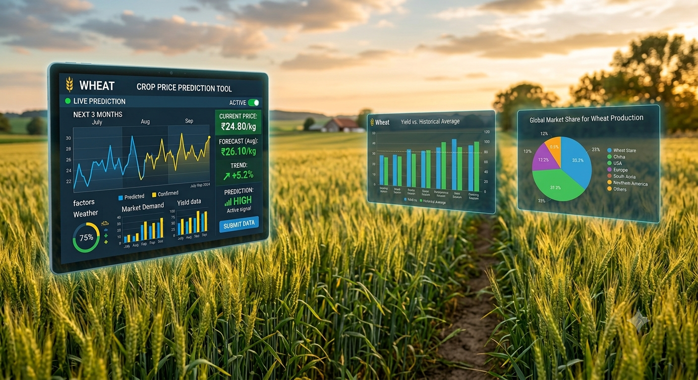

01
Crop Price Prediction Using ARIMA Regression
Developed a crop price prediction model using historical and current agricultural data, applying ARIMA regression to analyze price trends and forecast future crop prices. The project involved data processing, analysis, and model implementation using Python, achieving an 80% accuracy in price prediction.
02
Medical Equipment Failure
Developed a predictive model to identify potential medical equipment failures at an early stage, helping reduce the risk of critical situations and improve patient safety. The project uses **ensemble machine learning methods** to analyze equipment data and predict failures before they occur, enabling timely maintenance and reducing the possibility of life-threatening consequences.